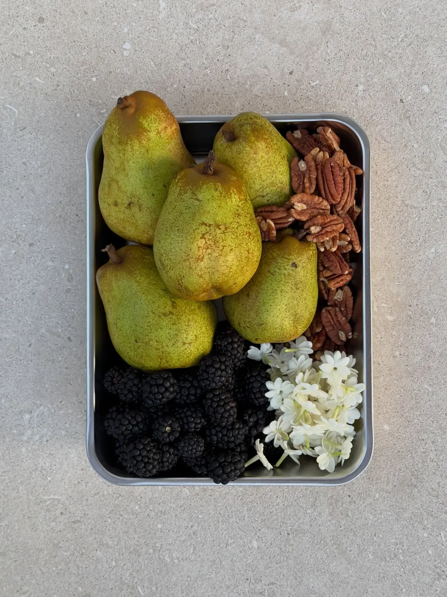

1Nieuwe suggestie
Van de kist naar je kom.
Onze suggesties beginnen bij wat het seizoen geeft. Peren, bramen en jasmijnbloesem worden een kom porridge die je nergens anders vindt.


Oat porridgePeer, gepocheerd in jasmijnBraambesPecanboterGranolaYoghurt
&
ShakshukaGroenteconfit, zachtgekookte eitjes, verse kruiden en tahini, met zuurdesem.
&
SeizoensyoghurtMet bloedappelsien en bergamot.